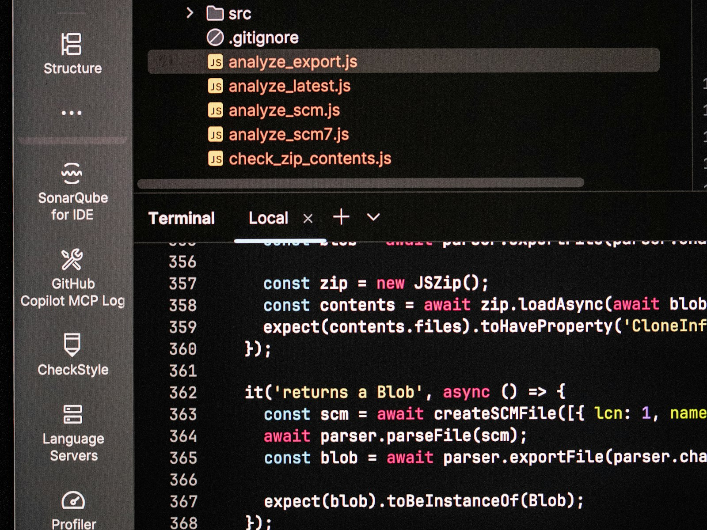

Consultoria em tecnologia
aplicada à operação real
A Mosten entende o contexto da operação antes de recomendar tecnologia. O objetivo é identificar causas, riscos e prioridades para definir o que realmente precisa ser feito.
Software, dados, automação, inteligência artificial, segurança e infraestrutura entram de acordo com o diagnóstico e com o impacto esperado para a operação.
Fale com um especialistaO desafio é fazer a tecnologia funcionar na operação
Grandes empresas convivem com sistemas legados, dados distribuídos e processos que envolvem diferentes áreas.
Sem um diagnóstico claro, iniciativas podem avançar sem resolver a causa do problema. A consultoria ajuda a definir prioridades, escolher o caminho mais adequado e acompanhar a implementação.

Engenharia Aplicada do diagnóstico à operação
A atuação da Mosten parte do entendimento do negócio e avança até a implementação e evolução da solução.
O Método Mosten estrutura essa jornada em oito etapas:
Compreender
Entendimento do negócio antes de qualquer decisão técnica.
Diagnosticar
Identificação de causas, riscos e oportunidades.
Priorizar
Definição do que vale atacar primeiro.
Construir
Desenvolvimento da solução técnica indicada.
Validar
Confirmação com o contexto real da operação.
Implantar
Entrada em produção dentro da operação.
Medir
Acompanhamento do resultado após a entrega.
Evoluir
Ajuste contínuo conforme a operação muda.
A abordagem também incorpora a lógica de Forward Deployed Engineer, aproximando especialistas da Mosten do contexto real da operação.
Quatro frentes de consultoria
A frente de atuação é definida pelo desafio da operação. Dependendo do caso, diferentes competências podem trabalhar de forma integrada no mesmo projeto.
Análise de fluxos, responsabilidades, controles e pontos de decisão para identificar gargalos, retrabalho e falhas de governança. A partir do diagnóstico, estruturamos processos e modelos operacionais mais eficientes.
Avaliação de sistemas e aplicações, levantamento de requisitos, desenho de solução, arquitetura, modernização de sistemas legados e integração entre plataformas. O foco é definir uma estrutura técnica coerente com a operação e com a evolução do negócio.
Organização de dados, definição de indicadores, arquitetura e governança, analytics e avaliação de casos de uso de inteligência artificial. O objetivo é criar bases confiáveis para análise, decisão e aplicação de IA.
Avaliação de riscos, acessos, conformidade, nuvem, continuidade e observabilidade. A atuação apoia a definição de padrões e controles sem comprometer a operação.
A consultoria pode atender uma necessidade pontual, apoiar uma decisão específica ou acompanhar uma jornada de diagnóstico, planejamento e implementação.
O formato é definido de acordo com o desafio, o escopo e o momento da operação.
Fale com um especialistaPara empresas que precisam de clareza antes de investir em tecnologia
A consultoria atende operações enterprise com sistemas, dados e processos distribuídos entre diferentes áreas, além de requisitos de segurança e governança.
A Mosten combina visão de negócio e conhecimento técnico para transformar o diagnóstico em prioridades e um plano de ação viável.
Perguntas frequentes sobre a consultoria em tecnologia da Mosten.
O que é Engenharia Aplicada?
É o modelo de atuação da Mosten que aplica investigação de negócio antes da construção de qualquer solução técnica, inspirado no conceito de Forward Deployed Engineer e formalizado no Método Mosten.
Em que a consultoria da Mosten é diferente de uma consultoria de TI tradicional?
A Mosten entra no contexto real da operação do cliente antes de recomendar ferramenta ou fornecedor. O diagnóstico de negócio vem antes da escolha técnica, não depois.
A consultoria pode ser contratada para um projeto pontual?
Sim. O serviço atende desde o apoio a uma decisão específica até jornadas completas de diagnóstico, planejamento e acompanhamento de implementação.
Quais frentes a consultoria cobre?
Processos e operações; software, arquitetura e integrações; dados, analytics e inteligência artificial; e segurança, governança e infraestrutura — isoladas ou combinadas no mesmo diagnóstico.
Comece pelo diagnóstico da sua operação.
Converse com nosso time sobre o desafio da sua operação e o que precisa ser resolvido.